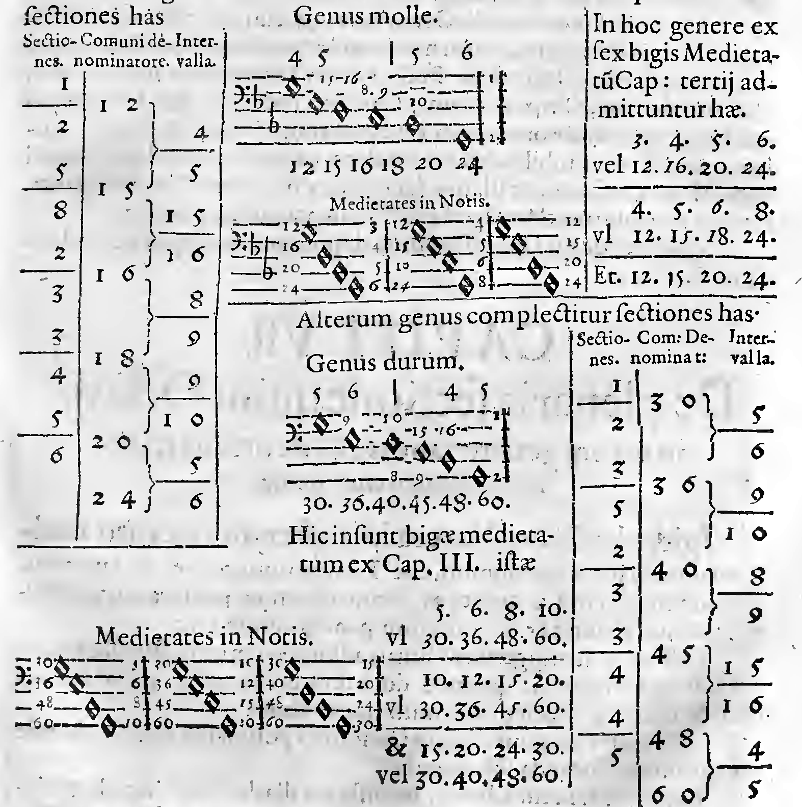

Chapter VI: The Soft (Minor) and Hard (Major) Musical Genera¶
Chapter VI.
On the Hard and Soft Genera of Song.
Of the genera of figures I spoke in Book I, Proposition XLIX; and since the divisions of the string themselves imitate them, by Axiom II of this book, it follows that—because the division of the continuously double proportion, and the trigonal division and its continuous doubles, are from figures of expressible sides, at least the primary ones, the Triangle and the Quadrangle, whereas the Pentagonal division is of an inexpressible side— those divisions by Axiom IV produce one genus of song, and this produces the other genus; to which latter, indeed, bisection is also admixed, not on account of the Tetragonal figure, but solely on account of the identical consonance of bisection.
Hence therefore are born two Genera of divisions, of which the one has these divisions:


Soft Genus (Genus molle).
Divisions |
Common denominator |
Intervals |
|---|---|---|
\(1/2\) |
\(12\) |
\(4/5\) |
\(5/8\) |
\(15\) |
\(15/16\) |
\(2/3\) |
\(16\) |
\(8/9\) |
\(3/4\) |
\(18\) |
\(9/10\) |
\(5/6\) |
\(20\) |
\(5/6\) |
\(24\) |
In this genus, out of the six pairs of Means in Chapter III, these are admitted:
\(3, 4, 5, 6\) or \(12, 16, 20, 24\).
\(4, 5, 6, 8\) or \(12, 15, 18, 24\).
And \(12, 15, 20, 24\).
The other genus embraces these divisions.
Hard Genus (Genus durum).
Divisions |
Common denominator |
Intervals |
|---|---|---|
\(1/2\) |
\(30\) |
\(5/6\) |
\(3/5\) |
\(36\) |
\(9/10\) |
\(2/3\) |
\(40\) |
\(8/9\) |
\(3/4\) |
\(45\) |
\(15/16\) |
\(4/5\) |
\(48\) |
\(4/5\) |
\(60\) |
Here are contained these pairs of means from Chapter III:
\(5, 6, 8, 10\) or \(30, 36, 48, 60\).
\(10, 12, 15, 20\) or \(30, 36, 45, 60\).
And \(15, 20, 24, 30\) or \(30, 40, 48, 60\).
These are those two commonly celebrated genera of Song; and the former is called the soft song (cantus mollis), because in it the soft Third and Sixth intervals are found ordered from the lowest voice; while the latter is called the hard song (cantus durus), from intervals of the same designation ordered in the same place of the octave system, the reason for whose names was stated in the preceding Chapter V.
For just as there \(5, 6\) in the lowest place did not tolerate \(3, 5\), so now here \(4, 5\) does not bear \(5, 8\), because the nature of melodious song requires this: that the third with the sixth make a perfect fourth, or diatessaron.
Hence therefore appears the natural barrier of each genus. For since in the soft song \(5, 6\) stands in the lowest place, and in the hard \(4, 5\), and the difference between them—namely the diesis \(24, 25\)—is not among the ordinary melodious intervals, by Chapter IV, therefore \(4, 5\) and \(5, 6\) cannot stand together in the lowest place of the same series of natural song; rather, when \(4, 5\) (the major third) is adopted, \(5, 6\) must for that turn be banished from the lowest place, or when the latter is admitted, the former is thrust out; where \(4, 5\) draws \(3, 5\) with it, and \(5, 6\) draws \(5, 8\), the minor sixth, with it.
Again, this distinction between both genera of harmony God Himself has expressed in the motions of the planets, as we shall hear in Book V.
Concerning those three Genera of the Ancients, whose names are Diatonic, Chromatic, and Enharmonic, I deliberately refrain from speaking here, lest I confuse the reader. Yet you may interpret the Diatonic as Hard Song, and the Chromatic as Soft Song—or indeed each individually as Diatonic, and the Chromatic as mixed of hard and soft. The Enharmonic, however, has nothing corresponding in natural song; in ordinary Music, though, there answer to it in some measure the vibratos of the human voice, the tremulant of organs, mordents on the strings of the lute (pandura), and the like.
See what we argue concerning these Genera below in the Appendix to the text of Ptolemy.